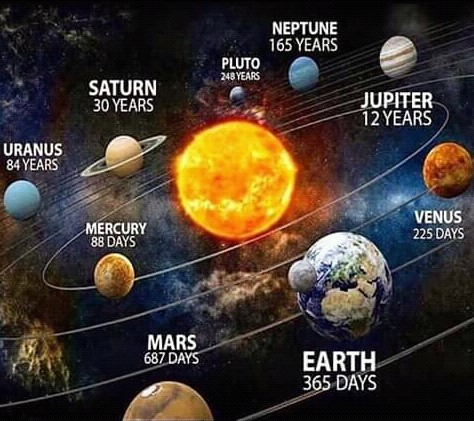
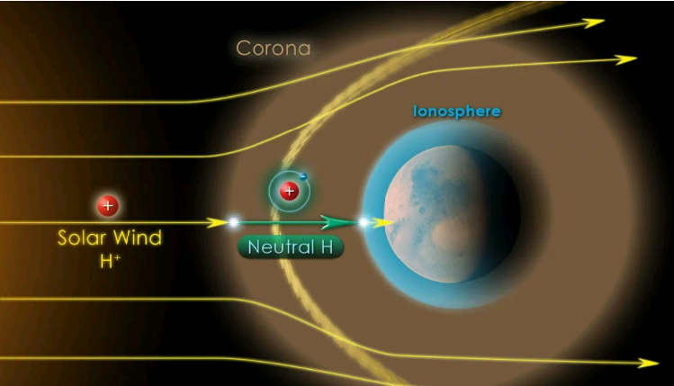
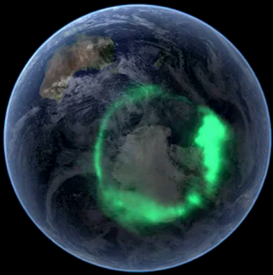

DEVELOPED BY ROBERT ZULU THE PROFESSIONAL PROGRAMMER
THE YEARS OF OUR PLANETS IN OUR SOLAR SYSTEM
SOLAR WIND
The solar wind is a stream of energized,
charged particles, primary electrons and protons. flowing outward from the
upper atmosphere of the Sun, called the corona, through the
solar system at speed as high as 900 km/s and a temperature of
1 million degrees (Celsius). It is made of plasma

DANGEROUS OF SOLAR WINDS
Solar winds can heat the Earth's outer atmosphere, causing
it to expand.
This can affect satellites in orbit, potentially leading to
a lack of GPS navigation, mobile phone signal and satellite TV such as Sky.
Additionaly, a surge of particles can lead to high currents in the
magnetosphere, which can lead to higher than normal electricity in power lines,
resulting in electrical transformers and power stations blow outs and a loss of power.
WHAT IS THE AURORA?

The Aurora is an incredible light show caused by collisions between
electrically charged praticles released from the Sun that enter the Earth's
atmosphere and collide with gases such as Oxygen and Nitrogen.
The lights are seen around the magnetic poles of the Northern and Southern
hemispheres.
The most common Aurora colour which is Green, is produced
by Oxygen molecules located about 60 miles above the earth. The rarer Red Auroras
are produced by high-altitude Oxygen, at heights of up 200 miles. Nitrogen
produces Blue or Purple Aurora
TIME
Time is the indefinite continued progress of
existence and events that occur in an apparently irreversible
succession from the past, through the present, to the
future.
Time is a component quality of various measurements
used to sequence events, to compare the duration of events
or the intervals between them, and to quantify rates of
change of quantities in material reality or in the
conscious experience.
Time is often referred to as fourth dimension, along with three dimensions,
TERMINAL VELOCITY
Terminal velocity is the maximum velocity attainable by an object as it falls through a fluid (air is the most common example). It occurs when the sum of the drag force and the buoyancy is equal to the downward force of gravity acting on the object. Since the net force on the object is zero, the object has zero acceleration.
In fluid dynamics, an object is moving at its terminal velocity if its speed is constant due
to the restraining force exerted by the fluid through which it is moving
As the speed of an object increases, so does the drag force acting on it, which
also depends on the substance it is passing through (for example air or water).